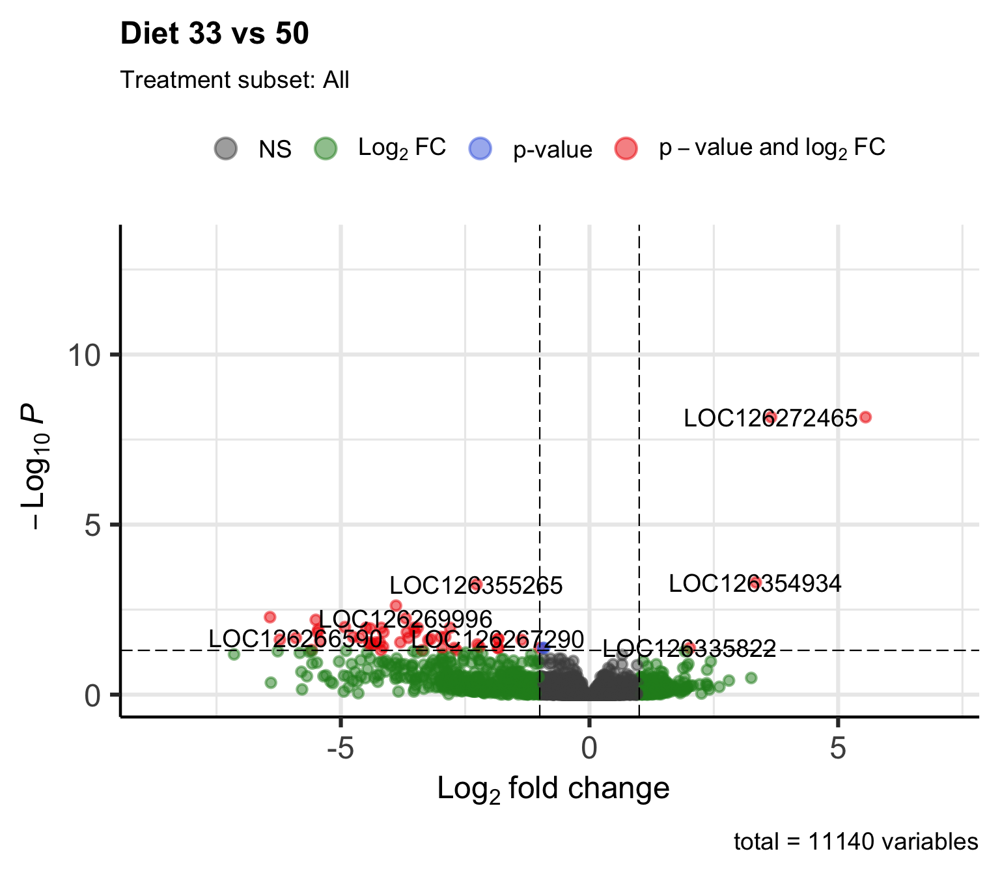
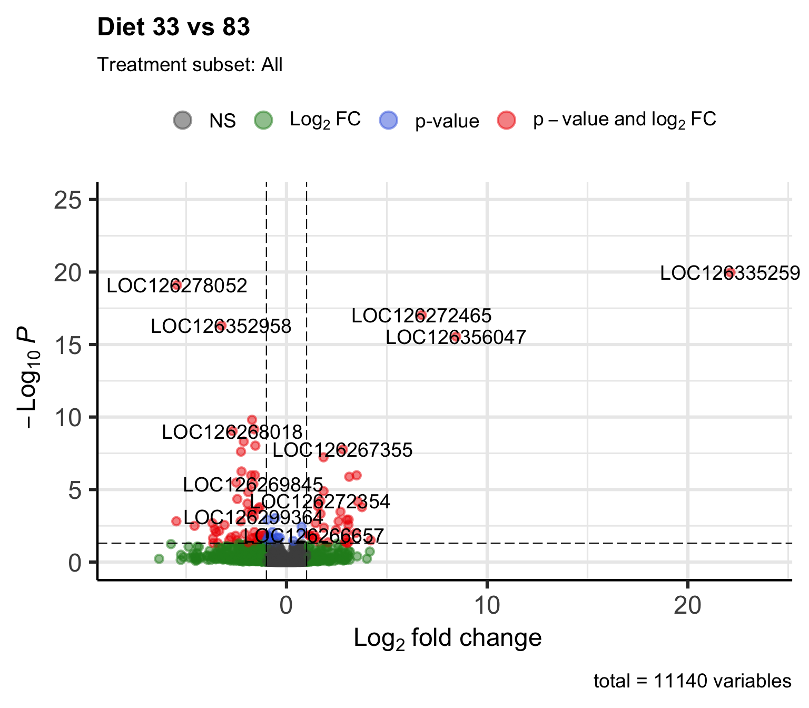
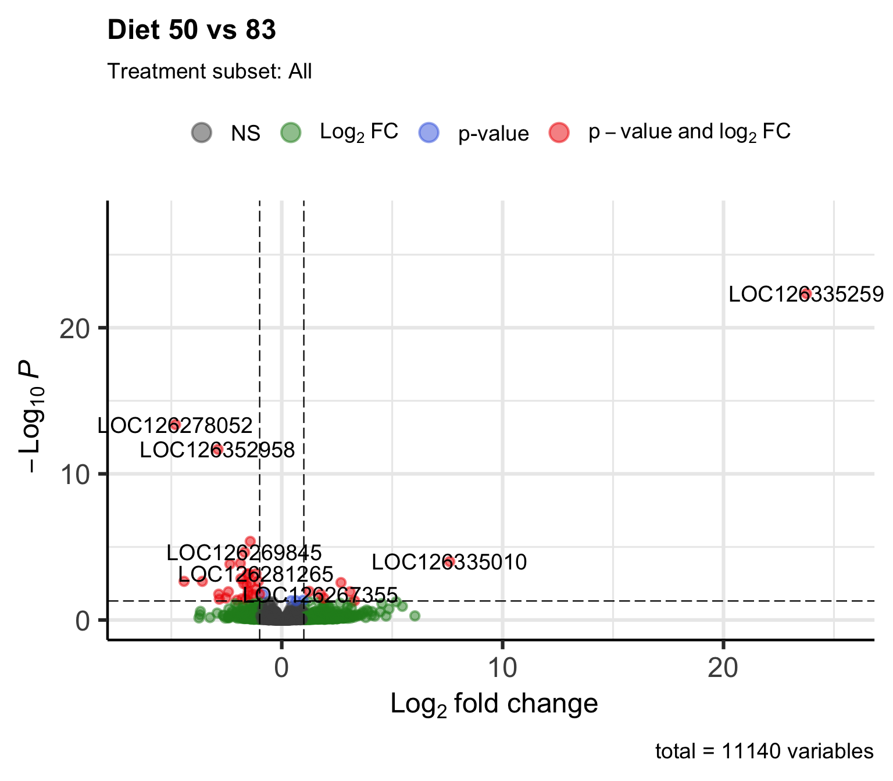
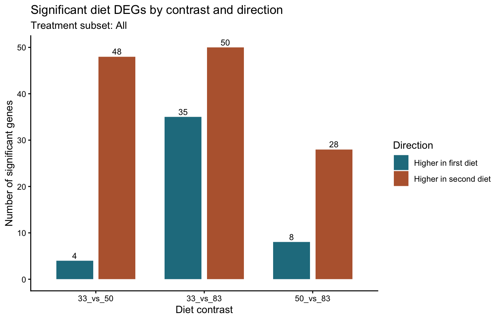

Last updated: 2026-08-16
Checks: 7 0
Knit directory:
gregaria-diet-infection-interaction/
This reproducible R Markdown analysis was created with workflowr (version 1.7.2). The Checks tab describes the reproducibility checks that were applied when the results were created. The Past versions tab lists the development history.
Great! Since the R Markdown file has been committed to the Git repository, you know the exact version of the code that produced these results.
Great job! The global environment was empty. Objects defined in the global environment can affect the analysis in your R Markdown file in unknown ways. For reproduciblity it’s best to always run the code in an empty environment.
The command set.seed(20260427) was run prior to running
the code in the R Markdown file. Setting a seed ensures that any results
that rely on randomness, e.g. subsampling or permutations, are
reproducible.
Great job! Recording the operating system, R version, and package versions is critical for reproducibility.
Nice! There were no cached chunks for this analysis, so you can be confident that you successfully produced the results during this run.
Great job! Using relative paths to the files within your workflowr project makes it easier to run your code on other machines.
Great! You are using Git for version control. Tracking code development and connecting the code version to the results is critical for reproducibility.
The results in this page were generated with repository version dfaa466. See the Past versions tab to see a history of the changes made to the R Markdown and HTML files.
Note that you need to be careful to ensure that all relevant files for
the analysis have been committed to Git prior to generating the results
(you can use wflow_publish or
wflow_git_commit). workflowr only checks the R Markdown
file, but you know if there are other scripts or data files that it
depends on. Below is the status of the Git repository when the results
were generated:
Ignored files:
Ignored: .DS_Store
Ignored: analysis/.Rhistory
Ignored: analysis/output/
Ignored: code/R_timecourse_reference/
Ignored: code/scripts/__pycache__/
Ignored: data/.DS_Store
Ignored: data/GO_Annotations
Ignored: data/external
Ignored: data/legacy_csv
Ignored: data/raw_read_counts
Ignored: data/reference
Ignored: data/scaffold_origin
Ignored: output/.DS_Store
Ignored: output/rmd_runs
Ignored: output/runs
Ignored: outputs
Ignored: scripts/.RData
Ignored: scripts/.Rhistory
Ignored: scripts/__pycache__/
Ignored: scripts/manuscript/__pycache__/
Note that any generated files, e.g. HTML, png, CSS, etc., are not included in this status report because it is ok for generated content to have uncommitted changes.
These are the previous versions of the repository in which changes were
made to the R Markdown
(analysis/38-exon-only-diet-pairwise-deg.Rmd) and HTML
(docs/38-exon-only-diet-pairwise-deg.html) files. If you’ve
configured a remote Git repository (see ?wflow_git_remote),
click on the hyperlinks in the table below to view the files as they
were in that past version.
| File | Version | Author | Date | Message |
|---|---|---|---|---|
| html | 1bc8d16 | Maeva TECHER | 2026-08-11 | changes layout |
| html | b30a02b | Maeva TECHER | 2026-08-11 | update figures |
| Rmd | 20984df | Maeva TECHER | 2026-08-10 | remove 1044 as bad mapping |
| html | 20984df | Maeva TECHER | 2026-08-10 | remove 1044 as bad mapping |
| Rmd | 8b8101c | Maeva TECHER | 2026-08-09 | fixing sample misassignement and missing library |
| html | 8b8101c | Maeva TECHER | 2026-08-09 | fixing sample misassignement and missing library |
This page reruns the diet contrasts with exon-only counts while retaining the same 44-sample cohort, rRNA exclusion, main-chromosome scope, DESeq2 filtering, and contrast directions used in the primary analysis.
Step 1 - Restrict placement
Use only main-chromosome non-rRNA genes while retaining all samples.
Step 2 - Test diet pairs
Compare diets separately among control and infected locusts.
Step 3 - Interpret context
Distinguish baseline diet effects from infection-dependent diet differences.
This is the analysis-cohort, main-chromosome version of the diet pairwise DEG page. It keeps every valid library after excluding QC outlier 1044.
All tests use only non-rRNA genes assigned to nuclear chromosomes by the official assembly-placement table. Unplaced scaffolds are retained only in the separate origin-audit and sensitivity pages.
This page tests pairwise diet contrasts. Set
treatment_subset to Control,
Infected, or All in the YAML header before
knitting.
The aim is to separate the diet question from the infection question as much as the design allows. When all samples are used, the model includes treatment as a covariate so diet contrasts are not simply rediscovering the infected-control difference. When one treatment is selected, the model asks which genes differ among diets within that treatment subset only.
The metadata and count matrix are matched by sample label before modelling. This keeps the analysis reproducible and prevents silent sample-order mistakes, which are especially easy to make when count columns carry sequencing-style prefixes and suffixes.
knitr::opts_chunk$set(message = FALSE, warning = FALSE)
required <- c("DESeq2", "ggplot2", "EnhancedVolcano", "readr", "dplyr")
missing <- required[!vapply(required, requireNamespace, logical(1), quietly = TRUE)]
if (length(missing) > 0) {
stop("Install required packages before knitting: ", paste(missing, collapse = ", "))
}
library(ggplot2)
direction_colors <- c("Higher in first diet" = "#237C8E",
"Higher in second diet" = "#B8643C")
project_dir <- normalizePath(".", mustWork = TRUE)
run_stamp <- format(Sys.time(), "%Y%m%d-%H%M%S")
out_dir <- file.path(project_dir, "output", "rmd_runs",
paste(params$output_tag, params$treatment_subset,
run_stamp, sep = "_"))
dir.create(out_dir, recursive = TRUE, showWarnings = FALSE)
metadata <- read.delim(file.path(project_dir, params$metadata_file),
check.names = FALSE)
metadata$label <- as.character(metadata$label)
metadata$Diet <- factor(metadata$Diet, levels = c("33", "50", "83"))
metadata$Treatment <- factor(metadata$Treatment, levels = c("Control", "Infected"))
counts_table <- readr::read_tsv(file.path(project_dir, params$counts_file),
show_col_types = FALSE)
stopifnot("gene_id" %in% names(counts_table))
counts <- as.matrix(counts_table[, setdiff(names(counts_table), "gene_id")])
rownames(counts) <- counts_table$gene_id
storage.mode(counts) <- "integer"
count_labels_all <- sub("_MERGE$", "", sub("^mehreen_", "", colnames(counts)))
keep_samples <- count_labels_all %in% metadata$label
counts <- counts[, keep_samples, drop = FALSE]
count_labels <- count_labels_all[keep_samples]
metadata <- metadata[match(count_labels, metadata$label), ]
stopifnot(identical(metadata$label, count_labels))
rownames(metadata) <- metadata$label
colnames(counts) <- count_labels
placement <- readr::read_tsv(file.path(project_dir, params$placement_file),
show_col_types = FALSE) |>
dplyr::distinct(gene_id, .keep_all = TRUE)
rrna_ids <- trimws(readLines(file.path(project_dir, params$rrna_file), warn = FALSE))
rrna_ids <- rrna_ids[nzchar(rrna_ids) & !startsWith(rrna_ids, "#")]
main_chromosome_ids <- placement$gene_id[
placement$sequence_class == "Nuclear chromosome" &
!placement$gene_id %in% rrna_ids
]
counts <- counts[intersect(rownames(counts), main_chromosome_ids), , drop = FALSE]
if (params$treatment_subset != "All") {
keep_samples <- metadata$Treatment == params$treatment_subset
counts <- counts[, keep_samples]
metadata <- droplevels(metadata[keep_samples, ])
}
keep_genes <- rowSums(counts >= params$min_count) >= params$min_samples
input_audit <- data.frame(
treatment_subset = params$treatment_subset,
samples_retained = ncol(counts),
raw_count_rows = nrow(counts_table),
main_chromosome_non_rRNA_rows = nrow(counts),
genes_entering_DESeq2 = sum(keep_genes)
)
knitr::kable(input_audit, caption = "Main-chromosome analysis input audit")| treatment_subset | samples_retained | raw_count_rows | main_chromosome_non_rRNA_rows | genes_entering_DESeq2 |
|---|---|---|---|---|
| All | 44 | 83204 | 19724 | 11140 |
write.csv(input_audit, file.path(out_dir, "main_chromosome_input_audit.csv"),
row.names = FALSE)DESeq2 models raw counts with library-size normalization and
gene-wise dispersion estimates. The All analysis uses
~ Treatment + Diet, so each diet coefficient is estimated
after accounting for infection status. This gives a cleaner diet
comparison than pooling control and infected samples without a treatment
term.
design_formula <- if (params$treatment_subset == "All") {
~ Treatment + Diet
} else {
~ Diet
}
dds <- DESeq2::DESeqDataSetFromMatrix(
countData = counts[keep_genes, ],
colData = metadata,
design = design_formula
)
dds <- DESeq2::DESeq(dds, minReplicatesForReplace = Inf, quiet = TRUE)Each contrast compares two diet levels at a time. A positive log2 fold-change means the gene is higher in the first diet named in the contrast; a negative log2 fold-change means it is higher in the second diet. The volcano plots show both effect size and adjusted p-value, while the CSV files keep the full table for downstream overlap and enrichment analyses.
diet_pairs <- combn(levels(droplevels(metadata$Diet)), 2, simplify = FALSE)
contrast_results <- list()
for (pair in diet_pairs) {
contrast_label <- paste(pair[1], "vs", pair[2], sep = "_")
message("Running diet contrast: ", contrast_label)
res <- DESeq2::results(dds, contrast = c("Diet", pair[1], pair[2]),
alpha = params$alpha, cooksCutoff = FALSE)
res_df <- as.data.frame(res)
res_df$gene_id <- rownames(res_df)
res_df$contrast <- contrast_label
res_df$significant <- !is.na(res_df$padj) &
res_df$padj < params$alpha &
abs(res_df$log2FoldChange) >= params$lfc_threshold
contrast_results[[contrast_label]] <- res_df
write.csv(res_df, file.path(out_dir, paste0("DESeq2_", contrast_label, ".csv")),
row.names = FALSE)
writeLines(res_df$gene_id[res_df$significant],
file.path(out_dir, paste0("significant_genes_", contrast_label, ".txt")))
print(EnhancedVolcano::EnhancedVolcano(
res_df,
lab = res_df$gene_id,
x = "log2FoldChange",
y = "padj",
pCutoff = params$alpha,
FCcutoff = params$lfc_threshold,
title = paste("Diet", pair[1], "vs", pair[2]),
subtitle = paste("Treatment subset:", params$treatment_subset)
))
}


all_pairwise <- do.call(rbind, contrast_results)
write.csv(all_pairwise, file.path(out_dir, "all_diet_pairwise_results.csv"),
row.names = FALSE)Volcano plots are useful for seeing the distribution of effect sizes, but they are not the fastest way to compare how many genes pass the current thresholds in each contrast. This barplot reduces each contrast to the number of significant DEGs and separates the direction of change.
sig_pairwise <- all_pairwise[all_pairwise$significant &
!is.na(all_pairwise$log2FoldChange), ]
sig_pairwise$direction <- ifelse(sig_pairwise$log2FoldChange > 0,
"Higher in first diet",
"Higher in second diet")
sig_pairwise$contrast <- factor(sig_pairwise$contrast,
levels = names(contrast_results))
sig_pairwise$direction <- factor(sig_pairwise$direction,
levels = c("Higher in first diet",
"Higher in second diet"))
deg_bar_counts <- as.data.frame(table(
contrast = sig_pairwise$contrast,
direction = sig_pairwise$direction
))
names(deg_bar_counts)[3] <- "n_significant_genes"
p_deg_counts <- ggplot(deg_bar_counts,
aes(x = contrast, y = n_significant_genes,
fill = direction)) +
geom_col(position = position_dodge(width = 0.78), width = 0.68) +
geom_text(aes(label = n_significant_genes),
position = position_dodge(width = 0.78),
vjust = -0.35, size = 3.2) +
scale_fill_manual(values = direction_colors) +
theme_classic() +
labs(
title = "Significant diet DEGs by contrast and direction",
subtitle = paste("Treatment subset:", params$treatment_subset),
x = "Diet contrast",
y = "Number of significant genes",
fill = "Direction"
)
p_deg_counts
ggsave(file.path(out_dir, "diet_pairwise_deg_count_barplot.png"),
p_deg_counts, width = 7.5, height = 4.8, dpi = 300)
write.csv(deg_bar_counts, file.path(out_dir, "diet_pairwise_direction_counts.csv"),
row.names = FALSE)The summary table reports the total number of genes that pass the adjusted p-value and log2 fold-change thresholds for each diet contrast. It is saved as a small machine-readable table because these counts are used again by the publication-figure and enrichment pages.
summary_table <- aggregate(significant ~ contrast, all_pairwise, sum)
names(summary_table)[2] <- "n_significant_genes"
knitr::kable(summary_table)| contrast | n_significant_genes |
|---|---|
| 33_vs_50 | 52 |
| 33_vs_83 | 85 |
| 50_vs_83 | 36 |
write.csv(summary_table, file.path(out_dir, "diet_pairwise_summary.csv"),
row.names = FALSE)writeLines(capture.output(sessionInfo()),
file.path(out_dir, "sessionInfo.txt"))
sessionInfo()R version 4.6.0 (2026-04-24)
Platform: aarch64-apple-darwin23
Running under: macOS Tahoe 26.6.1
Matrix products: default
BLAS: /Library/Frameworks/R.framework/Versions/4.6/Resources/lib/libRblas.0.dylib
LAPACK: /Library/Frameworks/R.framework/Versions/4.6/Resources/lib/libRlapack.dylib; LAPACK version 3.12.1
locale:
[1] C.UTF-8/C.UTF-8/C.UTF-8/C/C.UTF-8/C.UTF-8
time zone: Asia/Tokyo
tzcode source: internal
attached base packages:
[1] stats graphics grDevices utils datasets methods base
other attached packages:
[1] ggplot2_4.0.3 workflowr_1.7.2
loaded via a namespace (and not attached):
[1] SummarizedExperiment_1.42.0 gtable_0.3.6
[3] xfun_0.57 bslib_0.10.0
[5] ggrepel_0.9.8 processx_3.9.0
[7] Biobase_2.72.0 lattice_0.22-9
[9] tzdb_0.5.0 callr_3.7.6
[11] vctrs_0.7.3 tools_4.6.0
[13] generics_0.1.4 stats4_4.6.0
[15] parallel_4.6.0 tibble_3.3.1
[17] pkgconfig_2.0.3 Matrix_1.7-5
[19] RColorBrewer_1.1-3 EnhancedVolcano_1.30.0
[21] S7_0.2.2 S4Vectors_0.50.1
[23] lifecycle_1.0.5 compiler_4.6.0
[25] farver_2.1.2 stringr_1.6.0
[27] git2r_0.36.2 textshaping_1.0.5
[29] DESeq2_1.52.0 getPass_0.2-4
[31] Seqinfo_1.2.0 codetools_0.2-20
[33] httpuv_1.6.17 htmltools_0.5.9
[35] sass_0.4.10 yaml_2.3.12
[37] crayon_1.5.3 later_1.4.8
[39] pillar_1.11.1 jquerylib_0.1.4
[41] whisker_0.4.1 BiocParallel_1.46.0
[43] cachem_1.1.0 DelayedArray_0.38.1
[45] abind_1.4-8 locfit_1.5-9.12
[47] tidyselect_1.2.1 digest_0.6.39
[49] stringi_1.8.7 dplyr_1.2.1
[51] labeling_0.4.3 rprojroot_2.1.1
[53] fastmap_1.2.0 grid_4.6.0
[55] cli_3.6.6 SparseArray_1.12.2
[57] magrittr_2.0.5 S4Arrays_1.12.0
[59] dichromat_2.0-0.1 withr_3.0.2
[61] readr_2.2.0 scales_1.4.0
[63] promises_1.5.0 bit64_4.8.0
[65] rmarkdown_2.31 XVector_0.52.0
[67] httr_1.4.8 matrixStats_1.5.0
[69] bit_4.6.0 otel_0.2.0
[71] ragg_1.5.2 hms_1.1.4
[73] evaluate_1.0.5 knitr_1.51
[75] GenomicRanges_1.64.0 IRanges_2.46.0
[77] rlang_1.2.0 Rcpp_1.1.1-1.1
[79] glue_1.8.1 BiocGenerics_0.58.0
[81] vroom_1.7.1 rstudioapi_0.18.0
[83] jsonlite_2.0.0 R6_2.6.1
[85] systemfonts_1.3.2 MatrixGenerics_1.24.0
[87] fs_2.1.0
sessionInfo()R version 4.6.0 (2026-04-24)
Platform: aarch64-apple-darwin23
Running under: macOS Tahoe 26.6.1
Matrix products: default
BLAS: /Library/Frameworks/R.framework/Versions/4.6/Resources/lib/libRblas.0.dylib
LAPACK: /Library/Frameworks/R.framework/Versions/4.6/Resources/lib/libRlapack.dylib; LAPACK version 3.12.1
locale:
[1] C.UTF-8/C.UTF-8/C.UTF-8/C/C.UTF-8/C.UTF-8
time zone: Asia/Tokyo
tzcode source: internal
attached base packages:
[1] stats graphics grDevices utils datasets methods base
other attached packages:
[1] ggplot2_4.0.3 workflowr_1.7.2
loaded via a namespace (and not attached):
[1] SummarizedExperiment_1.42.0 gtable_0.3.6
[3] xfun_0.57 bslib_0.10.0
[5] ggrepel_0.9.8 processx_3.9.0
[7] Biobase_2.72.0 lattice_0.22-9
[9] tzdb_0.5.0 callr_3.7.6
[11] vctrs_0.7.3 tools_4.6.0
[13] generics_0.1.4 stats4_4.6.0
[15] parallel_4.6.0 tibble_3.3.1
[17] pkgconfig_2.0.3 Matrix_1.7-5
[19] RColorBrewer_1.1-3 EnhancedVolcano_1.30.0
[21] S7_0.2.2 S4Vectors_0.50.1
[23] lifecycle_1.0.5 compiler_4.6.0
[25] farver_2.1.2 stringr_1.6.0
[27] git2r_0.36.2 textshaping_1.0.5
[29] DESeq2_1.52.0 getPass_0.2-4
[31] Seqinfo_1.2.0 codetools_0.2-20
[33] httpuv_1.6.17 htmltools_0.5.9
[35] sass_0.4.10 yaml_2.3.12
[37] crayon_1.5.3 later_1.4.8
[39] pillar_1.11.1 jquerylib_0.1.4
[41] whisker_0.4.1 BiocParallel_1.46.0
[43] cachem_1.1.0 DelayedArray_0.38.1
[45] abind_1.4-8 locfit_1.5-9.12
[47] tidyselect_1.2.1 digest_0.6.39
[49] stringi_1.8.7 dplyr_1.2.1
[51] labeling_0.4.3 rprojroot_2.1.1
[53] fastmap_1.2.0 grid_4.6.0
[55] cli_3.6.6 SparseArray_1.12.2
[57] magrittr_2.0.5 S4Arrays_1.12.0
[59] dichromat_2.0-0.1 withr_3.0.2
[61] readr_2.2.0 scales_1.4.0
[63] promises_1.5.0 bit64_4.8.0
[65] rmarkdown_2.31 XVector_0.52.0
[67] httr_1.4.8 matrixStats_1.5.0
[69] bit_4.6.0 otel_0.2.0
[71] ragg_1.5.2 hms_1.1.4
[73] evaluate_1.0.5 knitr_1.51
[75] GenomicRanges_1.64.0 IRanges_2.46.0
[77] rlang_1.2.0 Rcpp_1.1.1-1.1
[79] glue_1.8.1 BiocGenerics_0.58.0
[81] vroom_1.7.1 rstudioapi_0.18.0
[83] jsonlite_2.0.0 R6_2.6.1
[85] systemfonts_1.3.2 MatrixGenerics_1.24.0
[87] fs_2.1.0